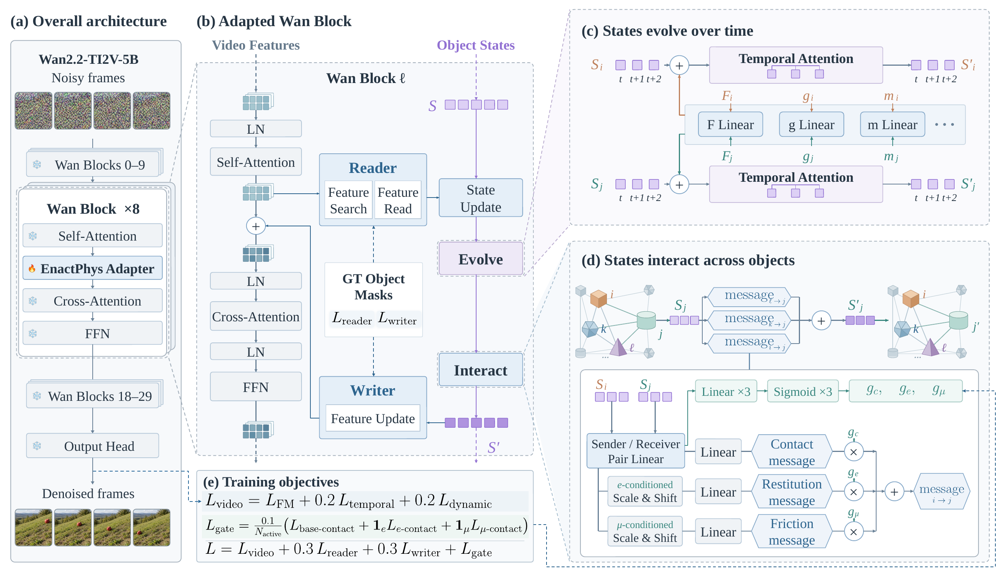
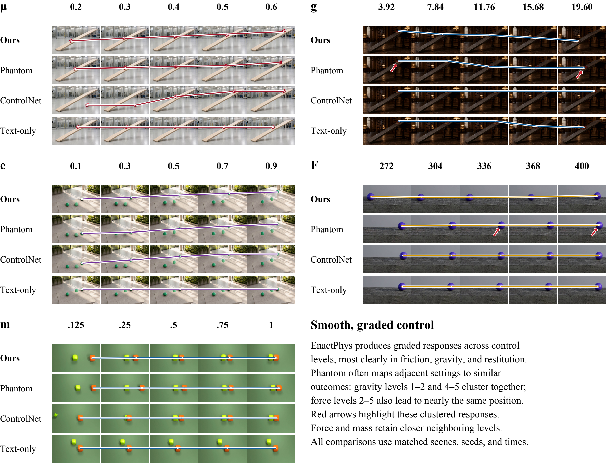

Object State Modeling
Maintain a sequence of latent states for each object, built from object-specific video features.

Maintain a sequence of latent states for each object, built from object-specific video features.
Force, gravity, and mass guide temporal updates. Friction and restitution guide inter-object interactions.
The Reader updates states from video features. The Writer sends the evolved states back to guide video denoising.
Rows: EnactPhys, Phantom, ControlNet, and Text-only. Columns: five parameter settings. Full 49-frame sequences at their recorded 16 fps.
Markers indicate observed positions at a shared time within each panel. Connecting lines guide comparisons across settings; they are not temporal trajectories. The force panel uses a shared enlarged crop. Force and mass include closely spaced responses.
